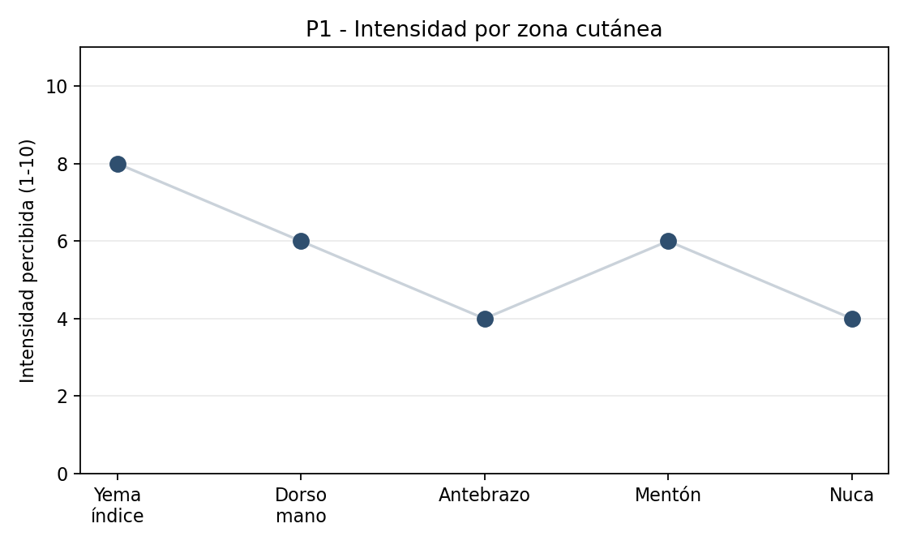

1. Fundamentos neurofisiológicos de las vías aferentes/eferentes
Se entienden los conceptos de vía aferente y vía eferente como dos tipos de vías nerviosas, orientadas a la transmisión de información del sistema nervioso central a la periferia, o viceversa, entendiendo que las vías aferentes transmiten información sensorial al sistema nervioso central, y las vías eferentes envían información motora desde el sistema nervioso central hacia la periferia.
2. Diseño metodológico y muestra
En el primer módulo presentado, se ocuparon agujas y una muestra de un solo individuo (N = 1), en distintas zonas del cuerpo, incluyendo la zona de yema del dedo índice, dorso de la mano, cara medial del antebrazo, mentón y nuca, de forma secuencial, interrogando al sujeto sobre la intensidad percibida en cada ensayo en una escala del 1 al 10.
| Protocolo | Participante | Experimentador | n | Diseño |
|---|---|---|---|---|
| P1 | Participante_01 | Estudiante | 1 | 5 zonas · 1 ensayo por zona · escala 1-10 |
3. Tablas de datos cuantitativos, representación gráfica y evidencia fotográfica original

| Zona | Intensidad | ¿Picor? | Observación |
|---|---|---|---|
| Yema del índice | 8/10 | No | N/A |
| Dorso de la mano | 6/10 | No | La percepción sensorial bajó de forma gradual |
| Antebrazo | 4/10 | No | La percepción sensorial bajó de forma gradual |
| Mentón | 6/10 | No | N/A |
| Nuca | 4/10 | No | N/A |
4. Discusión de resultados fundada en los principios de procesamiento sensorial y plasticidad neuronal
Se entiende, basado en los datos obtenidos, que los resultados de zonas como las yemas de los dedos y el dorso de la mano concentran altas cantidades de mecanorreceptores, entendidos como receptores sensoriales que procesan estímulos mecánicos como presión, estiramiento, vibración o sonido.
Cabe aclarar que el registro de 6/10 en el dorso de la mano corresponde al valor final de una percepción que bajó de forma gradual durante el ensayo.
En comparación con la zona de la nuca y mentón, regiones con presencia reducida de mecanorreceptores especializados en comparación con las estructuras previamente mencionadas.
También se tiene en cuenta la variación en el espacio receptivo de las células neuronales de cada región; varían, entendiendo el espacio receptivo como el radio de espacio habilitado en el cual cada neurona es capaz de captar información, siendo que el espacio receptivo de las neuronas es notablemente menor en la yema del dedo índice y en el dorso de la mano en comparación con la nuca y el mentón. Eso también aumenta la precisión para distinguir la intensidad de los estímulos sensoriales en una región.